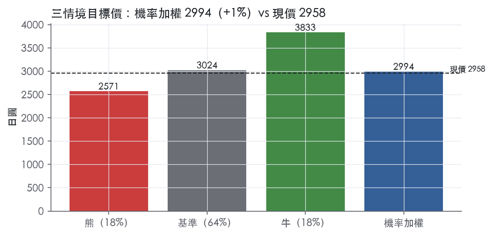
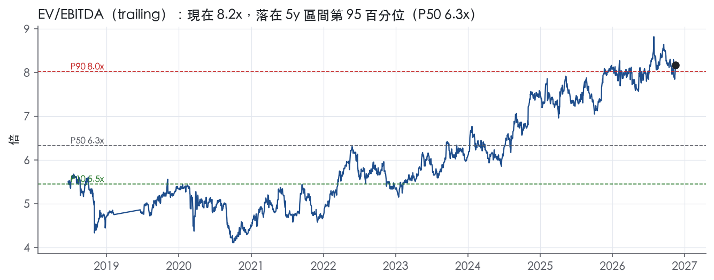
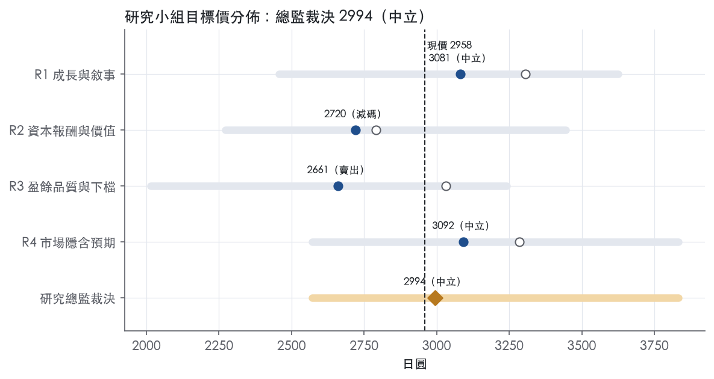
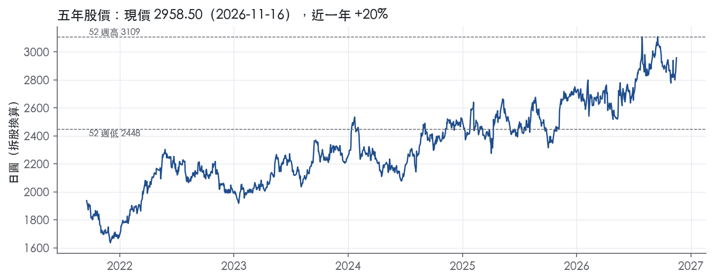

評等總表 › 未分類 › 9433.T
ＫＤＤＩ（9433.T）
核心槓桿撐盈餘，倍數回P75–P90區間，報酬接近門檻｜評等 中立｜目標價 2994
評等歷史與財報快評
| 報告日 | 評等 | 目標價 | 當時股價 | 超額報酬 |
|---|---|---|---|---|
| 2026-11-16 | 中立 | 2,994 | 2,958 | -3.9% |
| 評等 | 中立（邊界，鄰近減碼） |
| 12 個月目標價 | 2994 日圓 |
| 現價 | 2958.50 日圓（2026-11-16） |
| 預期報酬 | 股價 +1.2%＋股息 2.8%＝總報酬 +4.0%；日股門檻 7.8%，超額 -3.9% |
| 估值方法 | EV/EBITDA 6.7x，套在第 5–8 季的EBITDA（也就是一年後的未來四季） |
| 三情境 | 熊 2571／基準 3024／牛 3833 |
| 研究流程 | 四位研究員兩輪辯論＋研究總監裁決 |
| 資料來源 | EDINET、TDnet、J-Quants、Yahoo、FRED（全免費） |
目錄
第一章 結論摘要
核心槓桿撐盈餘，倍數回P75–P90區間，報酬接近門檻（研究總監裁決，四位研究員兩輪辯論後）
評等 中立（邊界，鄰近減碼）｜12 個月目標價 2994 日圓（總監三情境機率加權 3088 與研究員中位數 2900 各半）｜現價 2958.50（2026-11-16）
預期報酬：股價 +1.2%＋股息 2.8%＝總報酬 +4.0%。日股門檻 7.8%，超額 -3.9%，離減碼的分界不到三個百分點，屬邊界評等（落在其他級距的機率約四成）。
估值方法：EV/EBITDA 6.7x，套在第 5–8 季的EBITDA（也就是一年後的未來四季）。三情境：熊 2571（18%）／基準 3024（64%）／牛 3833（18%）。
什麼會讓研究總監改變看法：au フィナンシャルHD 若揭露借入金占淨負債比重高（金融借入金對 EV 分子的扭曲有量級證據），倍數可回 7.0x P90 轉偏多；2027-02 Q3 短信若再認列子公司減損或下修全年計畫，營益率退回 17.8%、倍數降到 6.3x 轉偏空。
投資論點
- 電信核心槓桿：テレコムコア營收增3.1%，調整後營業利益增16.7%，營益率可回到18.6%。
- 倍數回落吃掉漲幅：市場付的倍數將從7.7x降到7.0x，總報酬4.0%低於門檻7.8%。
- 減損重演風險：2027年2月第三季短信若再認列減損，營益率退回17.8%，倍數降到6.3x。
關鍵數字
| 過去四季（實際，FY2027Q2） | 未來四季 | 第 5–8 季 | 第 9–12 季 | |
|---|---|---|---|---|
| 營收（B） | 6,208.7B | 6,519.2B | 6,812.5B | 7,085.0B |
| 營收成長 | 5.3% | 5.0% | 4.5% | 4.0% |
| 營業利益率 | 17.8% | 18.6% | 18.8% | 18.8% |
| EPS（日圓） | 188.00 | 234.89 | 254.30 | 271.14 |
| EPS 成長 | 11.5% | 24.9% | 8.3% | 6.6% |
| 每股股息（日圓） | — | 0.00 | 0.00 | 0.00 |
| P/E（現價） | 15.7x | 12.6x | 11.6x | 10.9x |
| 股息殖利率（現價） | 2.8% | — | — | — |
過去四季為申報數字；預測為研究總監的假設、程式計算。倍數與殖利率都用現價計算，用來看現價對應各期獲利的高低。
三情境
| 情境 | 機率（歷史） | 故事 | 未來四季營收成長 | 第 5–8 季營益率 | 倍數 | 目標價 | 股價漲跌 |
|---|---|---|---|---|---|---|---|
| 熊 | 18%（25%） | 風險表第 2 條（減損按 LTM 節奏重演、調整後與 GAAP 缺口擴大）＋第 1 條（成長分部失速）＋第 3 條（NTT 一體化下的料金値下げ）；JGB 走日本上行路徑 3.40 推高金融費用，倍數回到前瞻帶 P75 | 4.5% | 17.5% | 6.3x | 2571 | -13.1% |
| 基準 | 64%（60%） | テレコムコア槓桿延續、每年預留 0.5pp 減損，倍數自帶頂回落到前瞻帶 P75–P90 之間 | 5.0% | 18.8% | 6.7x | 3024 | 2.2% |
| 牛 | 18%（14%） | FY2027 調整後營業利益超過計畫、買回恢復 FY2026 節奏，倍數維持現行前瞻 7.7x，營益率不超過 FY2019 的 20.0%；JGB 走日本下行路徑 2.30 | 5.5% | 19.5% | 7.7x | 3833 | 29.6% |
目標價由程式依研究總監的驅動與倍數計算；機率由研究總監給定。括號內是歷史頻率：把這檔股票過去十年 12 個月報酬的波動形狀，置中在基準情境，結果落在各情境附近的比例。

四位研究員用不同方法各自估值，回應研究總監的質疑後交出第二輪，最後由總監逐點裁決。各研究員的主張見第七章，裁決理由見第八章，完整論證見《研究底稿》。
| 立場（一輪→二輪） | 加權目標價（一輪→二輪） | 評等（一輪→二輪） | 第二輪倍數 | 熊～牛目標價 | |
|---|---|---|---|---|---|
| R1 成長與敘事 | 中性→中性 | 3306→3081 | 加碼→中立 | 7.4x | 2457～3626 |
| R2 資本報酬與價值 | 看空→看空 | 2791→2720 | 減碼→減碼 | 6.8x | 2271～3444 |
| R3 盈餘品質與下檔 | 中性→看空 | 3032→2661 | 中立→賣出 | 6.3x | 2015～3242 |
| R4 市場隱含預期 | 看多→中性 | 3285→3092 | 加碼→中立 | 6.7x | 2571～3833 |
| 研究總監裁決 | 中性 | 2994 | 中立 | 6.7x | 2571～3833 |
目標價由程式依各自的驅動與倍數計算；評等＝機率加權總報酬 − 日股門檻。
第二章 業務概況
公司做什麼、賣給誰
KDDI是日本第二大電信運營商，以au、UQ mobile、povo多品牌提供5G通信服務為核心，並將金融、能源、生活轉型（LX）等服務與通信連結，創造附加價值。企業集團由KDDI本身、193家合併子公司（日本133家、海外60家）及46家權益法適用關聯公司／共同支配企業構成，主業分為「個人事業」與「商業事業」（FY2026有報分類方式，FY2027起已改為三分部，詳下節）。海外方面對蒙古客戶提供通信、金融與影音娛樂服務，對緬甸當地電信商（MPT）提供營運支援，並經營往來日本出入境旅客的通信服務。LTM營收6,208.72B、LTM EBITDA 1,795.18B，規模在日本電信業中名列前茅。KDDI本質是電信基礎設施現金牛加上金融／生活圈服務的複合體，電信核心提供穩定現金流，生活圈服務拉高顧客黏著度與單位經濟價值。
業務分部與產品
自FY2027（2026年4月起）KDDI將原「個人事業／商業事業」二分部重組為「電信核心（テレコムコア）」、「個人成長（パーソナルグロース）」、「商業成長（ビジネスグロース）」三分部。FY2027上半年（2026年4-9月），電信核心營收2,201.041百萬円，年增3.1%，調整後營業利益435.673百萬円，年增16.7%，主因行動通信收入增加。個人成長營收605.313百萬円，年增8.3%，調整後營業利益114.935百萬円，年增3.7%，主因金融事業收入與裝置相關收入增加，以及羅森（ローソン）權益法投資利益增加。商業成長營收330.916百萬円，年增10.2%，調整後營業利益39.967百萬円，年增18.8%，主因網路安全／AI整合與資料中心收入增加。三分部相對規模明顯：電信核心是三者中營收最大但成長最慢（個位數低段）的分部，個人成長與商業成長規模較小但成長速度較快，是公司財務目標中的「兩位數成長」引擎。公司FY2026-2028中期經營戰略訂下的集團層級目標是：電信核心穩定成長、兩個成長分部實現兩位數成長，帶動集團調整後營業利益年均複合成長率（CAGR）達5%。
產品線包括行動通信（au／UQ mobile／povo）、固網（光纖、有線電視，涵蓋JCOM）、金融（auフィナンシャルホールディングス）、能源（auエネルギーホールディングス）、資料中心（Telehouse品牌，含大阪堺、東京Tama新設施）、企業雲端／資安（KDDIまとめてオフィス、株式会社ラック）、以及新推出的AI企業平台「WAKONX」。研發支出FY2026為39,995百萬円，即約40.0B，聚焦5G通信品質優化（AI自律調參、復旧支援AI）、資料中心節能（水冷技術）、量子運算及宇宙光通信等前瞻技術。設備投資方面，FY2026電信設備等投資額（含軟體）為683,749百萬円，即683.7B，主要用於5G基地台擴建、固網FTTH、有線電視與資料中心新增建設。
客戶、地區與通路
客戶以日本國內個人與法人用戶為主，海外業務集中於蒙古（MobiCom，持股98.8%）與緬甸（支援當地電信商MPT）。法人客戶面涵蓋智慧型手機設備、網路、雲端等多元解決方案，以及以「Telehouse」品牌提供的資料中心服務。通路方面，KDDI以股權綁定多家地區型電信子公司作為銷售與服務據點：沖縄セルラー電話（持股54.5%）、中部テレコミュニケーション（持股80.9%）、UQコミュニケーションズ（持股32.3%，IFRS下視為實質控制而納入合併）等。大股東方面，京セラ持股14.75%、トヨタ自動車持股9.54%，兩者同時是業務合作夥伴：京セラ涉及手機製造與通信工程背景合作，トヨタ自動車則在車聯網及移動出行業務上與KDDI連結；トヨタ自動車亦列為KDDI的政策持股標的之一，帳列126,393百萬円（約126.4B），合作內容涵蓋車聯網及移動出行業務。零售與生活圈通路方面，KDDI以權益法持有ローソン（持股50.0%，列為共同支配企業），合作內容為提供AI／DX技術，是個人成長分部利潤的重要來源之一（半年報明確提及羅森權益法投資利益增加帶動該分部獲利成長）。KDDI的「通路」策略是以股權綁定地區電信商與零售通路，再交叉銷售金融、能源與生活圈服務，這是日本電信商中較獨特的生態圈打法。
最近四季發生了什麼
最近四個單季營收持續成長但獲利節奏不穩：FY2026Q4（2025年10月至2026年3月之間對應季度，期末2026-03-31）營收1,600.12B，年增4.8%，營益率15.2%；FY2027Q1（期末2026-06-30）營收1,487.32B，年增5.1%，營益率回升至21.1%；FY2027Q2（期末2026-09-30）營收1,565.49B，年增4.3%，營益率回落至15.7%，單季淨利167.81B。公司FY2027上半年（合併Q1+Q2）整體表現為：營收3,052.811百萬円，年增4.7%；調整後營業利益633.082百萬円，年增13.9%，此數字排除了連結子公司イーオンホールディングス、menu株式会社之商誘及可辨識無形資産減損損失，計入該等減損後的營業利益僅為559.291百萬円，年增0.8%。母公司歸屬調整後中間利益390.049百萬円，年增13.6%；計入一次性項目（含カカクコム持分法適用除外相關再測定益）後的中間利益為363.274百萬円，年增0.9%。營運現金流428.203百萬円，較去年同期大幅減少394.454百萬円，主因子公司金融事業借款由增轉減；自由現金流92.100百萬円，較去年同期減少249.291百萬円。公司最新一期全年計畫（業績予想）維持：營收6,410.00B、調整後營業利益1,210.00B、歸屬母公司調整後淨利731.00B、EPS 196.29日圓，與2026年5月12日公告的FY2026決算短信內容相同，未做修正。公司FY2027上半年調整後獲利年增雙位數，但GAAP口徑因一次性減損（イーオン、menu）被大幅侵蝕，顯示公司財報表面數字和「調整後」指標之間的落差正在擴大，須留意管理層是否持續倚賴非經常項目拆分來維持成長敘事。
公司自己說的成長引擎與策略
公司在中期經營戰略「Power-to-Connect 2028」中提出三項「Fusion」作為新成長結構：「Real-Tech Fusion」（顧客體驗中現實與科技的融合）、「Infrastructure Fusion」（通信基礎設施與AI基礎設施的融合）、「HR Fusion」（多元技能與經驗的融合）。公司表示在即將到來的「AI前提社會」中，將透過支援企業客戶事業成長的「AI勞動力」，以及支援顧客生活變革的「AI生活力」，作為公司的差異化來源。公司財務目標設定為：電信核心分部維持穩定成長，兩個成長分部（個人成長、商業成長）實現兩位數成長，帶動集團調整後營業利益CAGR達5%；同時將ROE與ROIC利差列為重要經營指標並與董監酬薪連動。股東回報政策為調整後當期淨利配息率超過40%，並持續配合事業成長穩定增配，庫藏股買回則視與成長投資的報酬比較後機動實施。公司亦主動揭露治理課題：合併子公司ビッグローブ及其子公司ジー・プラン的廣告代理業務被查出存在無實體的虛構循環交易，已對過去年度有價證券報告書進行更正，並於2026年6月2日向東京證券交易所提交改善報告書。
三個Fusion敘事本質是把電信核心的穩定現金流重新導流到金融、能源、資料中心與AI整合等較高成長但競爭更激烈的領域，策略邏輯合理，但近期一次性減損（イーオン、menu）與ビッグローブ治理問題顯示集團管理深度仍有缺口，執行風險不可忽視。目前EV/EBITDA 8.1x（trailing）已位於5年分位95.2%附近高檔，市場已給予相當成長溢價，若兩個成長分部的雙位數成長未如期兌現，倍數面臨回落壓力。

第三章 經濟護城河
結論：窄，趨勢變窄
KDDI 的護城河評為「窄」：頻譜授權與寡占網路結構讓我們有把握未來 5 年以上 ROIC 仍高於資本成本，但這些優勢不足以支撐 10 年期的把握。趨勢評為「變窄」，因為 ROIC 已從十年高點 14.4% 降到十年低點 9.0%，兩個數字都來自量化底稿，而且最低值就是最新一年。新增資本大量流向電信以外、報酬尚未證明的領域，這是趨勢向下的主因。
優勢來源
優勢以頻譜授權（無形資產）與效率規模為主，轉換成本是次要來源。
無形資產（授權）
- 國內提供電氣通信服務須取得電氣通信事業法的登錄，設置無線局的電氣通信設備須取得電波法的免許。
- 頻譜由主管機關分配、數量有限，新進者無法單靠資本複製，這是 KDDI 最硬的一道牆。
- 公司在 Opensignal 國內 5G SA 通信體感分析中，全 6 部門取得第 1 名。
- 網路品質領先可以支撐 au 品牌的訂價，但對手可以追上，因此我們不把它單獨當成護城河。
效率規模
- 負有申報接續約款義務的第二種指定電氣通信設備設置業者，為 NTTドコモ、ソフトバンク、Wireless City Planning、KDDI、沖縄セルラー電話與 UQコミュニケーションズ。
- 沖縄セルラー電話與 UQコミュニケーションズ都是 KDDI 的合併子公司。
- 全國級行動網路實質上集中在少數集團手中，日本市場的規模只容得下少數幾張全國網路。
- FY2026 電信設備等投資額（含軟體）為 683,749M。
- 每年這種量級的投資是新進者難以跨越的門檻。
轉換成本（次要）
- 公司以 au、UQ mobile、povo 多品牌提供 5G 通信，並把金融、能源、LX 等服務與通信連結。
- 公司表示，成長領域的服務會提高顧客黏著度，並降低テレコムコア的解約率。
- 電氣通信事業法第 27 條之 3 禁止過度圍綁等不當的期間拘束。
- 因此轉換成本只能來自生活圈綑綁，不能靠合約鎖定，強度有限，而且材料中沒有解約率數字可以佐證。
不列入的類別
- 業者接到其他電氣通信業者的接續請求時必須接受（第 32 條）。
- 互連義務讓網路的價值不專屬於單一業者，所以不列網路效應；材料也沒有單位成本低於同業的證據，所以不列成本優勢。
數字上看得到嗎
數字支持「窄」、不支持「寬」：利潤率極穩，但 ROIC 長期下滑，最新一年已低於資本成本代理值。
支持的一面
- 毛利率十年平均 43.6%、標準差 1.0%；營業利益率十年平均 18.9%、標準差 0.9%。
- ROIC 十年平均 12.2%、標準差 1.9%。
- ROIC 有資料的 8 年中，有 7 年高於資本成本代理值 10.1%，平均超額 2.1%。
衝突的一面
- 最新 ROIC 9.0% 是十年最低值，而且低於 10.1%。
- ROIC 自 FY2024 起依序為 10.4%、10.3%、9.0%（資料包年度表 ROIC 欄）。
為什麼仍維持「窄」而不下修為「無」
- 營業利益率沒有同步下滑，可見 ROIC 下滑主要來自投入資本膨脹，而不是本業獲利惡化。
- 淨負債由 FY2024 的 1,097.18B 升到 FY2025 的 3,110.92B，再升到 FY2026 的 3,789.25B（／FY2025／FY2026）。
- 資本成本代理值是用美國 10 年債 5.1加 5% 組成，但以日圓計價的 KDDI 對應的是日本 10 年債 2.841，因此代理值高估了 KDDI 的日圓資本成本。
- 改用日圓口徑後，9.0% 仍可能高於資本成本，這是我們不下修為「無」的理由。
- FCF 利潤率標準差 4.2%偏大，我們判斷主要反映金融事業借款進出對營運現金流的擾動，不代表本業不穩。
什麼會侵蝕它
最大的侵蝕來源是資本配置稀釋，其次是頻譜再分配與價格監管。
資本配置稀釋
- ビッグローブ處於債務超過，金額 63,888M；エナリス也處於債務超過，金額 11,900M。
- ビッグローブ及其子公司被查出無實體的架空循環交易，公司已於 2026 年 6 月 2 日向東證提出改善報告書。
- 電信現金流若持續投向低報酬事業，即使電信本業的護城河不變，集團 ROIC 仍會繼續被拉低。
頻譜再分配
- 依電波法第 27 條之 12，既有基地局使用中的頻率若有效利用評價未達基準，可以重新列為特定基地局的開設對象。
- 頻譜授權不是永久資產，這是「寬」評級無法成立的制度性理由之一。
價格與綑綁監管
- 指定業者不得讓搭售端末時的通信費比不搭售時更有利。
- 監管持續壓縮綑綁空間，轉換成本難以擴大。
持續性的投資負擔
- AI 資料中心與 6G 需要長期投資，如果無法轉嫁到價格上，ROIC 會進一步承壓。
對估值的含意
目標倍數相對同業應「持平」，不給溢價。寡占的頻譜結構保住了利潤率的穩定，但 ROIC 趨勢向下、最新值低於代理資本成本，不構成比同業更持久的超額報酬。KDDI 的 EV/EBITDA 8.2x 已位於自身 5 年 95.2% 分位，P/E 15.7x 也高於 5 年中位 14.8x，倍數若要再擴張，需要先看到 ROIC 止跌的證據。
量化底稿：報酬率與利潤率的水準與穩定度
| 指標 | 最新 | 十年平均 | 標準差 | 最低 | 最高 |
|---|---|---|---|---|---|
| ROIC | 9.0% | 12.2% | 1.9% | 9.0% | 14.4% |
| 毛利率 | 42.7% | 43.6% | 1.0% | 42.2% | 45.2% |
| 營業利益率 | 18.1% | 18.9% | 0.9% | 16.7% | 20.0% |
| FCF 利潤率 | 18.3% | 13.2% | 4.2% | 7.8% | 19.9% |
| ROE | 14.0% | 14.1% | 1.1% | 12.3% | 15.6% |
程式計算。資本成本代理值（10 年債＋5%）：10.1%；ROIC 平均減資本成本：2.1%；ROIC 有資料的 8 年中，高於資本成本 7 年。
第四章 財務體質與盈餘品質
結論：中品質，現金轉換與付息能力都健康，但槓桿轉黃、股東回饋比率偏低且本期有一次性減損與關係企業重估利益攪動數字，需看調整後數字評估核心獲利力
現金有沒有跟上盈餘
LTM 營業現金流／淨利 1.96x、自由現金流／淨利 1.02x，均為綠燈，顯示盈餘有紮實的現金支撐。近三年平均更高（CFO/NI 2.37x、FCF/NI 1.31x），十年平均亦穩定在 CFO/NI 2.12x、FCF/NI 1.12x，沒有長期惡化趨勢。應計比率 LTM 為 -3.6%，近三年 -6.0%、十年 -6.8%，持續為負，代表盈餘認列比現金流保守，不是靠應計堆出來的。FY2026 全年營業活動現金流 1,788,853 百萬円，較前期增加 539,811 百萬円，增幅主要來自金融事業存款增加，這部分现金流有相當一部分是金融子公司資產負債表擴張帶來的，而非電信本業自然產生，需留意品質差異。FY2027 中間期（半年）營業現金流 428,203 百萬円，較去年同期的 822,657 百萬円大幅減少 394,454 百萬円，主因稅前利益增加但金融事業借入金由增轉減，顯示現金流季節性與金融子公司資金面變化大，不能只看單季外推全年。
公司調整了什麼（GAAP 與非 GAAP 的差距）
FY2027 中間期決算短信揭露「調整後營業利益」633,082 百萬円，比 GAAP 營業利益 559,291 百萬円高出 73,791 百萬円，差額主要是連結子公司イーオンホールディングス、menu株式会社的商譽及可辨認無形資產減損損失。「親會社所有者歸屬調整後中間利益」390,049 百萬円，比 GAAP 中間利益 363,274 百萬円高 26,775 百萬円，差額除上述減損外，還包含カカクコム持分法適用除外相關的再測定利益被排除。GAAP 損益表上「その他の營業外損益」本期有一筆持分法適用除外に伴う再測定益 19,818 百萬円（FY2026 全年），這是處分／除列關係企業股權產生的一次性會計利得，不是經常性營運成果。此外 FY2026 其他損益項下仍有連結子公司不當交易（架空循環取引）相關的代理店手續費外部流出認列損失 2,031 百萬円。我方判斷：減損損失（イーオン、menu）是真實的投資失敗沖銷、應計入估值基礎，不應完全剔除；持分法適用除外的再測定利益是一次性會計利得，估值時應剔除；不當交易相關費用金額小但反映公司治理瑕疵，不是單純一次性。
資產負債表與資本配置
淨負債／EBITDA 從十年平均 0.80x 一路上升到 LTM 1.99x，近三年平均 1.51x，燈號轉黃；FY2026 年度有利子負債餘額 5,375,351 百萬円，較前期增加 937,789 百萬円，主因金融事業存款、借入金及公司債增加。但利息保障倍數 LTM 25.1x、近三年 54.5x、十年 91.3x 均為綠燈，付息能力完全沒問題，顯示槓桿上升主要是金融子公司（au フィナンシャルHD）資產負債表擴張，不是電信本業財務風險上升，公司本身亦揭露排除 au フィナンシャルHD 後，自有資本比率為 48.5%（前期 50.9%）。親會社所有者歸屬持分比率從 30.1% 降到 26.6%（FY2026）、FY2027 中間進一步降至 26.5%，持續下滑值得留意但速度平緩。股東回饋：（股利＋回購）／淨利 LTM 42.9%、近三年 44.4%、十年 41.5%，均低於綠燈門檻 50%，屬黃燈；公司財務目標為配息率 40% 超，FY2026 已達成配息率 40% 超目標，回購採機動實施、非固定承諾，故回饋比率偏低是政策選擇而非盈餘品質問題。稀釋股數年變動 LTM -1.4%、近三年 -4.1%、十年 -2.7%，持續淨減少，回購確實在稀釋股東權益上發揮作用。
紅旗逐條說明
- 淨負債／EBITDA 黃燈（1.99x）：真實但非警訊。上升主因金融事業（au フィナンシャルHD）存款、借入金及公司債增加，排除金融子公司後電信本業自有資本比率仍達 48.5%，且利息保障倍數 25x 以上，屬於會計口徑（金融業務併表）造成的槓桿數字放大，不是本業槓桿風險。
- （股利＋回購）／淨利 黃燈（42.9%）：非問題，是公司既定資本配置政策。配息率鎖定 40% 超、已達標，回購視成長投資機會機動執行，不是現金不足以回饋股東，FY2027 中間期財務活動現金流支出反而因回購支出減少而縮小 65,809 百萬円，顯示回購步調放緩是選擇性，非能力限制。
- SBC／營收無資料：計分表未提供數字，無法評論，不構成紅旗。
- 子公司不當交易：計分表未單獨列出，但 MD&A 揭露連結子公司架空循環取引，公司已公布調查結果並強化治理，財務影響金額小（2,031 百萬円其他費損），屬一次性且金額有限，但治理瑕疵本身是需持續追蹤的軟性風險，非單純一次性沖銷可完全排除。
對估值的含意
估值應以 GAAP 歸屬母公司淨利為主、但把持分法適用除外再測定利益（19,818 百萬円，FY2026）與カカクコム重估利益等一次性項目剔除後的核心利潤作交叉驗證，减損損失（イーオン、menu）則應視為真實成本計入、不應加回。現金品質健康（CFO/NI、FCF/NI 均綠燈），不需要對盈餘做額外折價，但應留意金融事業（au フィナンシャルHD）併表後現金流與槓桿數字波動較大，分析本業自由現金流時宜參考排除金融子公司後的口徑。槓桿轉黃但付息能力無虞，不足以壓低目標倍數，惟若淨負債／EBITDA 持續朝 3.0x 紅燈逼近，應重新檢視對 EV/EBITDA 倍數的容忍上限。
量化底稿：盈餘品質計分表
| 項目 | LTM | 近三年 | 十年 | 燈號 | 規則 |
|---|---|---|---|---|---|
| 營業現金流／淨利 | 1.96x | 2.37x | 2.12x | 綠 | ≥1.00x 綠、<0.80x 紅 |
| 自由現金流／淨利 | 1.02x | 1.31x | 1.12x | 綠 | ≥0.90x 綠、<0.60x 紅 |
| 應計比率（(淨利−CFO)／平均總資產） | -3.6% | -6.0% | -6.8% | 綠 | ≤0.0% 綠、>5.0% 紅 |
| SBC／營收 | — | — | — | — | ≤3.0% 綠、>8.0% 紅 |
| 淨負債／EBITDA | 1.99x | 1.51x | 0.80x | 黃 | ≤1.50x 綠、>3.00x 紅 |
| 利息保障倍數（營業利益／利息） | 25.1x | 54.5x | 91.3x | 綠 | ≥8.00x 綠、<3.00x 紅 |
| 稀釋股數年變動 | -1.4% | -4.1% | -2.7% | 綠 | ≤0.0% 綠、>3.0% 紅 |
| （股利＋回購）／淨利 | 42.9% | 44.4% | 41.5% | 黃 | ≥50.0% 綠、<0.0% 紅 |
程式計算；燈號以 LTM（無則近三年平均）判定。
第五章 主要風險
結論：最大的風險是「調整後」利潤敘事與GAAP獲利之間的落差持續擴大，若市場重新以GAAP口徑定價，目前高檔的EV/EBITDA倍數面臨回落壓力。
五大風險表
| 風險 | 觸發指標（看什麼數字、在哪裡看） | 對 EPS 的影響方向與粗略幅度 | 未來 12 個月發生機率（高／中／低） | 出處 |
|---|---|---|---|---|
| 1. 成長分部（個人成長／商業成長）未能兌現雙位數成長目標，拖累集團調整後營業利益CAGR 5%目標 | 每季決算短信中「個人成長」「商業成長」兩分部營收與調整後營業利益年增率；若任一分部單季年增跌破10% | 方向：負向，大──兩分部是公司財務目標的成長引擎，一旦落空，市場會重估整個三分部敘事 | 中 | |
| 2. 「調整後」利潤與GAAP利潤缺口擴大（子公司商誘／無形資產減損重複發生） | 每季決算短信中「調整後營業利益」vs「營業利益」的差額、「調整後中間利益」vs「中間利益」的差額 | 方向：負向，大──本期調整後營業利益年增13.9%，但計入イーオン、menu減損後僅年增0.8%；調整後中間利益年增13.6%，計入減損及一次性項目後僅年增0.9% | 高 | |
| 3. NTT法修法／電信事業法修正後的競爭環境變化，NTT集團一體化若持續推進，可能侵蝕KDDI相對競爭優勢 | 總務省審議會動向、NTT法修正公告、NTT集團組織再編公告（如NTTドコモ、NTTデータグループ完全子公司化後續動作） | 方向：負向，中──影響通信料收入與資本支出效率，幅度未具體化 | 中 | |
| 4. 內部控制失靈再現（參考ビッグローブ／ジー・プラン虛構循環交易事件） | 東證改善報告書後續追蹤公告、是否有新的過年度財報更正公告 | 方向：負向，中──過年度有報已被訂正，若治理改善未落實，可能再發生會計處理問題影響信任度與股價 | 低 | |
| 5. 網路安全事件或大規模通信障礙導致服務停止，損及品牌信任與客戶維持成本 | 公司公告的重大通信障礙事件、資安事件揭露、顧客流失率（契約數變化） | 方向：負向，中──原文列為主要風險但未附具體財務數字 | 低 |
逐條說明
風險一：成長引擎分部未達標。 公司FY2026-2028中期戰略明確設定電信核心穩定成長、個人成長與商業成長兩分部要達成雙位數成長，三者合計帶動集團調整後營業利益CAGR 5%。FY2027上半年個人成長分部調整後營業利益年增僅3.7%，明顯落後於其營收年增8.3%，顯示該分部利潤轉換效率正在走弱。商業成長分部調整後營業利益年增18.8%、營收年增10.2%，表現相對較好，但規模仍小，對集團整體貢獻有限。目前市場給予的EV/EBITDA 8.1x已處於5年分位95.2%的高檔【資料包：trailing 倍數帶】，這個溢價本質上是為「兩個成長分部將持續雙位數成長」買單；若個人成長分部利潤成長率持續低於營收成長率，市場對整套成長敘事的信心會動搖。
風險二：調整後與GAAP利潤缺口擴大。 這是本期最明顯、最可監測的風險。公司FY2027上半年調整後營業利益633.082百萬円、年增13.9%，但計入イーオンホールディングス與menu株式會社的商誘及可辨識無形資產減損損失後，營業利益僅559.291百萬円、年增0.8%。同樣地，調整後中間利益年增13.6%，計入減損及カカクコム持分法適用除外相關再測定益等一次性項目後，GAAP中間利益年增僅0.9%。公司全年業績予想（營收6,410.00B、調整後營業利益1,210.00B、歸屬母公司調整後淨利731.00B、EPS 196.29日圓）維持不變、未做修正，但這份計畫本身是以「調整後」口徑編制，若下半年再有併購標的減損，GAAP EPS與計畫的落差會進一步擴大。這個風險的特點是「已經發生、且公司自己在財報中揭露」，屬於可直接追蹤的高機率項目。
風險三：NTT法與電信事業法修法後的競爭格局變化。 2025年5月通過的「電気通信事業法及び日本電信電話株式会社等に関する法律の一部を改正する法律」維持了NTT法框架，但公司在有報中明確表達對NTT集團一體化（含NTTドコモ、NTTデータグループ完全子公司化）持續推進、可能損害公平競爭的擔憂。這屬於政策風險，觸發指標是具體的、可觀測的（修法公告、總務省審議會結論），但發生時點與幅度難以量化，列為中等機率。
風險四：內部控制／會計治理風險。 公司子公司ビッグローブ及ジー・プラン被查出存在無實體的虛構循環交易，已導致過年度有價證券報告書訂正，並於2026年6月2日向東證提交改善報告書。公司承認「改善措施的一部或全部若未適切整備運用，可能再發生不適當交易或會計處理」的風險。這屬於信任類風險，一旦再發生會對股價造成跳空式衝擊，但考量公司已公開揭露並採取改善動作，短期內再犯機率列為低。
風險五：通信障礙、網安事件、天災。 公司在有報中列舉大量可能導致服務停止的事由（網路攻擊、系統故障、地震颱風等天災、緬甸政變與外匯管制風險等），並說明已建立24小時監控與災害應變體制。此類風險屬於電信業常態性風險，公司已有成熟應對機制，列為低機率但一旦發生對品牌與短期營運影響不小。
公司沒寫、但我們認為該注意的
高檔倍數下的均值回歸風險。 目前EV/EBITDA 8.1x（現在）／8.2x（trailing）處於5年分位95.2%、EV/EBIT處於96.0%分位，接近近五年最高水平【資料包：trailing 倍數帶】，而公司「調整後」口徑的獲利成長敘事正面臨本文風險一、二所述的兌現壓力。若市場轉向以GAAP口徑或更保守假設重新評價，倍數有從高檔回落至5年中位數（EV/EBITDA約6.3x）的空間，這將是比任何單一業務風險更直接衝擊股價的因子，但公司財報與有報均未討論自身倍數水位，屬於我們外部疊加的判斷。
股東結構中的策略股東（京セラ、トヨタ自動車）若調整政策持股，可能影響股價供需。 京セラ持股14.75%、トヨタ自動車持股9.54%，皆屬於業務合作型大股東而非單純財務投資人【業務概況章】。在東證要求上市公司檢視並處分「政策保有株」的大方向下，若這兩大股東啟動減持，市場籌碼面可能承壓，但公司有報與決算短信均未對此風險進行討論。
第六章 市場在定價什麼
現價 2958.50 對應 trailing（過去四季）P/E 15.7x、EV/EBITDA 8.1x、EV/EBITA —、EV/Sales 2.3x、FCF 殖利率 6.6%。主要估值倍數 EV/EBITDA 現在 8.2x，落在5 年區間第 95 百分位（P10／P50／P90 = 5.5x／6.3x／8.0x）。

把程式的機械基準預測放到現價下，市場付的前瞻倍數是：EV/EBITDA（未來四季） 7.7x、P/E（未來四季） 13.0x、EV/EBITDA（第 5–8 季） 7.2x、P/E（第 5–8 季） 11.9x。反推 DCF 顯示市價隱含未來五年營收年成長 4.0%（WACC 9.0%、終值成長 3.0%、FCF 利潤率 12.8%，SBC 不加回）。
| 倍數 | 現在 | 5 年 P10 | 5 年 P50 | 5 年 P90 | 現在分位 | 全期 P50 |
|---|---|---|---|---|---|---|
| P/E | 15.7x | 13.3x | 14.8x | 16.4x | 74.7% | 13.3x |
| EV/EBITDA | 8.2x | 5.5x | 6.3x | 8.0x | 95.2% | 5.7x |
| EV/EBITA | 13.2x | — | — | — | — | 7.8x |
| EV/EBIT | 13.3x | 9.2x | 10.6x | 13.1x | 96.0% | 9.4x |
| EV/Sales | 2.4x | 1.7x | 1.9x | 2.4x | 85.9% | 1.8x |
| P/S | 1.8x | 1.6x | 1.7x | 1.8x | 83.4% | 1.6x |
| P/FCF | 15.3x | 9.0x | 12.6x | 20.3x | 60.4% | 12.6x |
trailing 倍數（股價 ÷ 過去四季）；分位以每個交易日計算。
（日股同業籃尚未建置：評等門檻用日股絕對門檻＝日本 10 年公債＋股權風險溢酬 5%，見首頁。）
事後實現前瞻倍數帶（EV/EBITDA，2018-11-21..2025-11-19）：P10／P50／P90 = 4.3x／5.5x／7.0x。它是每個交易日的股價除以之後四季實際實現的指標；一年後，今天的第 5–8 季正是那時的未來四季，所以這條帶是 12 個月目標價的同口徑倍數。因為用的是事後實際而非當時預期，過去成長超乎預期的公司這條帶會偏低。
程式的機械基準（成長率從過去四季年增率三年收斂到 6%、利潤率持平）用 事後實現前瞻 EV/EBITDA P50 估值得到 2304（-22.1%），市場現行前瞻倍數（現價 ÷ 基準 未來四季指標）一年後持平，套在基準 第 5–8 季指標得到 3594。這兩個數字只是參考點，不是本報告的目標價；研究員對這個定價的回應在第七章。
第七章 四位研究員的看法
下表是每位研究員第一輪（各自獨立）與第二輪（回應研究總監的質疑後）的結果。目標價全由程式依各自的假設計算。
| 立場（一輪→二輪） | 加權目標價（一輪→二輪） | 評等（一輪→二輪） | 第二輪倍數 | 熊～牛目標價 | |
|---|---|---|---|---|---|
| R1 成長與敘事 | 中性→中性 | 3306→3081 | 加碼→中立 | 7.4x | 2457～3626 |
| R2 資本報酬與價值 | 看空→看空 | 2791→2720 | 減碼→減碼 | 6.8x | 2271～3444 |
| R3 盈餘品質與下檔 | 中性→看空 | 3032→2661 | 中立→賣出 | 6.3x | 2015～3242 |
| R4 市場隱含預期 | 看多→中性 | 3285→3092 | 加碼→中立 | 6.7x | 2571～3833 |
| 研究總監裁決 | 中性 | 2994 | 中立 | 6.7x | 2571～3833 |
目標價由程式依各自的驅動與倍數計算；評等＝機率加權總報酬 − 日股門檻。
分歧度：第一輪 加權目標價 2791～3306（區間＝現價的 17%）· 倍數 7～7.8x · 立場 中性×2、看空×1、看多×1；第二輪 加權目標價 2661～3092（區間＝現價的 15%）· 倍數 6.3～7.4x · 立場 中性×2、看空×2。

| 研究員 | 第二輪主張 | 堅持的理由 |
|---|---|---|
| R1 成長與敘事 | 中性。倍數7.4x，取過去三年市場付的中位數。 | 營收成長4.8%，低於公司計畫，因テレコムコア只成長3.1%。 |
| R2 資本報酬與價值 | 偏空。倍數6.8x，在五年中位數6.3x上只保留一半口徑溢價。 | 投入資本報酬率9.0%是十年最低，護城河變窄，不給現行倍數。 |
| R3 盈餘品質與下檔 | 偏空。倍數6.3x，金融借款墊高倍數的幅度沒有證據。 | 減損部分屬經常性，のれん540.28B仍在帳上，不全額加回。 |
| R4 市場隱含預期 | 中性。倍數6.7x，低於市場現行的7.7x。 | 市場錯在利潤率：テレコムコア槓桿不在價格裡，營益率會上修。 |
每位研究員的逐條回應與完整論證見《研究底稿》（9433.T_研究底稿_2026-11-16.docx）。
第八章 研究總監裁決
分歧登記
| 分歧點 | R1 | R2 | R3 | R4 | 什麼資料會分出勝負 |
|---|---|---|---|---|---|
| ① 營收成長 y1／y2 | 4.8／4.3%：核心只有 3.1%，不跟計畫 | 4.5／4.0%：看不到下半年加速 | 4.5／3.5%：增量是低毛利端末與金融 | 5.0／4.5%：十年只有 FY2018 超過 6% | 2027-02 Q3 短信九個月累計營收年增；全年計畫 6,410.00B 是否維持 |
| ② GAAP 營益率 y1–y3 | 18.3／18.5／18.5%，保留上半年減損一半 | 17.8／18.0／18.0%，y1 沿用含減損 LTM | 18.2／18.4／18.5%，減損部分經常性 | 18.6／18.8／19.0%，每年預留 0.5pp | Q3 短信「調整後營業利益−營業利益」差額；FY2027 調整後營業利益對 1,210.00B |
| ③ 目標倍數與錨 | 7.4x@ntm，trailing 3 年 P50 | 6.8x@ntm，5 年 P50 加一半口徑溢價 | 6.3x@q5_q8，前瞻帶 P75 | 6.7x@q5_q8，P75–P90 之間 | au フィナンシャルHD 借入金占淨負債比重；一年後 trailing EV/EBITDA 落點 |
| ④ 熊情境深度與機率 | 6.6x、20% | 6.3x、21% | 5.5x（P50）、14% | 6.3x、17%（牛 18%） | 下半年是否再有子公司減損；歷史 ≤−10% 頻率 18%、≤−20% 僅 1% |
逐點裁決
① 營收：選 R4（5.0／4.5／4.0%）。 四人都砍掉基準往 6% 收斂的假設，成立：十年只有 FY2018 的 6.2% 超過 6%。砍多少，證據偏 R4：上半年 +4.7%，Q1 5.1%、Q2 4.3%（FY2027Q2），個人成長 +8.3%、商業成長 +10.2%，沒有減速觸發；全年計畫 6,410.00B 未修，日本公司期中不修通常代表進度在軌。研究部所有來源的營收預測誤差中位數都偏低（−0.6～−0.8%），R3 的 y2 3.5% 是最低值，又沒有端末或金融收入一年後轉負的證據，缺口在此。R4 的營收絕對誤差 2.1% 也是四人最好。
② 營益率：own——y1、y2 採 R4 的 18.6／18.8%，y3 停在 18.8%。 口徑 GAAP。基準照抄的 LTM 17.8%含上半年 73,791 百萬円減損（財務體質章）；FY2026 的 18.1%才是乾淨基底：營業利益內一次性項目只有不當交易損失 2,031 百萬円，再測定益 19,818 百萬円列在營業外。在此之上テレコムコア營收 +3.1%、調整後營業利益 +16.7%，集團 +13.9%，槓桿已在半年數字裡。R2 把 y1 留在 17.8%，等於假設減損每年按上半年規模重演，那是熊情境不是基準。R4 每年預留 0.5pp 營收給減損（假設），我接受：のれん 540,282 百萬円仍在帳上，風險表第 2 條機率「高」。紀錄面：R1、R2、R3 與基準的營業利益誤差中位數都偏低（−2.8～−4.8%），R4 +0.2%。y3 不跟到 19.0%：個人成長營收 +8.3% 但調整後營業利益只 +3.7%，比重上升會稀釋，核心 16.7% 的年增在基期墊高後會收斂（R1 的 G3 邏輯）；十年最高是 FY2019 的 20.0%，不創新高。
③ 倍數：own，7.0x EV/EBITDA 套 Q5–Q8，錨是事後實現前瞻帶 P90。 這是決定評等的分歧。四人都同意 EV 分子自 FY2025 起含金融事業借入金，方向確定、量級沒人能證明（R2、R3 的上下界）。量級我用 R2 提的交叉驗證間接定：EV/EBITDA 8.2x 在 5 年帶 95.2% 分位，P/E 15.7x 只在 74.7% 分位、5 年 P50 14.8x；市場對基準 Q5–Q8 EPS 付的 P/E 11.9x低於 10 年中位 13.3x。以權益口徑看，這檔股票沒有「95 分位」溢價，EV 倍數的分位有相當部分來自分子。R3 退回 P75、把全部口徑溢價留給牛，是把方向確定的偏誤當成零；R2 錨在 5 年 P50，但 1 年與 3 年 trailing P50 是 8.0x、7.4x（3y.P50），市場已在新結構下付了兩年高於舊帶的價格，回舊中位等於假設結構倒退。R1 的 7.4x@ntm 和我的 EV 實質相同，我改用劇本主尺 q5_q8，前瞻帶直接可比不換算。不取市場持平 7.7x的理由全是個股因素：ROIC 9.0% 十年最低、護城河章「窄、變窄」不給溢價、個人成長利潤轉換差、上半年買回支出減少、ビッグローブ改善報告書後一年內又有イーオン與 menu 減損。R3 把「JGB 2.84 高於樣本期」列為不給 P90 的理由，是用利率壓倍數，退回；他另外兩條（量級未證、帶後段已含新結構）成立，所以我不往 P90 之上走。
④ 情境深度：熊取 R4 的 6.3x／17.5%，不取 R3 的 5.5x。 R3 自承拿不出尾端比歷史厚的公司特有證據，他的熊離自己基準 −24%，程式對照歷史只有 8% 卻給 14%；5.5x 要市場收回全部口徑溢價、減損重演、核心槓桿消失三件事同時發生，十年內 ≤−20% 頻率只有 1%。R4 的熊對應風險表第 2、1、3 條，倍數回 P75，深度可與歷史 ≤−10% 的 18% 對照。牛取 R4：調整後營業利益超過計畫、買回恢復、倍數維持現行前瞻 7.7x，營益率不超過 FY2019 的 20.0%。
漂移與總經。 R1 向中位數靠攏 82%、R4 76%，但每條修正都附新證據：R1 的 7.8x→7.4x 來自我轉發的帶數字，R4 的 7.0x→6.7x 是撤回拿不出第二證據的上修；R3 反向移動是撤回無出處的「重複扣」。皆不退回。四人 macro_deviations 皆空。情境總經路徑依本行日本前提：牛取下行路徑（JGB 2.30、日圓 160），對淨負債 3,574.70B的國內防禦股利率淨有利、日圓只影響端末毛利；熊取上行路徑（JGB 3.40、政策利率 2.25），金融費用已從 15,316 升到 25,580 百萬円，再升息直接吃進損益。
最終假設與目標倍數
- 營收成長 5.0／4.5／4.0%（分歧①）。
- GAAP 營益率 18.6／18.8／18.8%（分歧②）。
- 資本支出／營收 11.5%（假設，採 R3；LTM 10.8% 低於 FY2026 的 11.2%〔〕與十年區間 11.1–13.0%，資料中心與 5G 投資不會收縮）。
- 股數年變動 −2.5%（假設；回購「機動實施」，上半年買回支出減少，不跟基準 −3.7%）。
- D&A、稅率、SBC 照基準。
目標倍數 EV/EBITDA 7.0x 套 Q5–Q8（第 5–8 季），錨是事後實現前瞻帶 P90（4.3／4.8／5.5／6.3／7.0x），口徑一致；低於市場持平 7.7x、高於零報酬 6.6x，即我預期一年後市場付的倍數比現在少，理由是③的個股因素。同業：日股同業籃尚未建置；護城河章結論「相對同業持平、不給溢價」，我的錨全為自家帶，不含同業溢價。
三情境與機率
| 情境 | 機率 | 來源 | 驅動（相對基準覆蓋） | 倍數 | 故事 |
|---|---|---|---|---|---|
| 牛 | 20% | R4 | rev y1 5.5%；營益率 19.2／19.5／19.8%；股數 −3.7% | 7.7x | 調整後營業利益超過計畫、買回恢復 FY2026 節奏，倍數維持現行前瞻；JGB 2.30 |
| 基準 | 62% | 總監 | 上節假設 | 7.0x | 核心槓桿延續、每年預留 0.5pp 減損，倍數自帶頂回落到 P90 |
| 熊 | 18% | R4 | rev 4.5／3.5／3.0%；營益率 17.8／17.5／17.5% | 6.3x | 風險表第 2 條（減損按 LTM 節奏重演）＋第 1 條（成長分部失速）＋第 3 條（NTT 一體化下的料金値下げ）；JGB 3.40，倍數回 P75 |
牛、熊目標價取 R4 的情境（程式結果 3,833／2,571），我的基準比他高一級倍數、落在兩者之間，確切距離由程式給；出發點是置中分布 ≥+10% 的 19% 與 ≤−10% 的 18%。牛多給 1 個百分點的公司理由：上半年調整後營業利益 +13.9% 後全年計畫仍未上修，日本公司這種進度多以超過計畫收尾。熊不加厚：減損與ビッグローブ事件已公告，基準已用 0.5pp 預留，R2 第二輪也撤回同樣的加碼。牛高於熊，與本檔歷史順序一致、與研究部 22 份報告的慣性相反，是依資料修正。
我們與市場的差距在哪
現價隱含「盈餘不改善、倍數不變」：反推 DCF 隱含營收成長 4.0%（WACC 9.0% 偏高，實際要求更低，R4 的 E5）、FCF 利潤率 12.8% 持平、前瞻 EV/EBITDA 7.7x。我們的營收和市場差不多，差在盈餘的利潤率驅動：GAAP 營益率從含減損的 17.8% 回到 18.6–18.8%，這段核心槓桿不在價格裡；倍數反向，我們預期 7.7x 回落到 7.0x，吃掉一部分盈餘差。加上 2.8% 股息率，機率加權總報酬高於 7.8% 門檻，偏多立場與評等一致。評等由倍數裁決決定：若採 R4 的 6.7x，依他的程式結果就是中立。
可證偽主張
- 2027-05-20 前，FY2027 決算短信調整後營業利益 ≥ 1,210.00B。
- 2027-02-15 前，Q3 短信九個月累計「調整後營業利益−營業利益」≤ 100B。
- 2027-02-15 前，テレコムコア九個月累計調整後營業利益年增 ≥ 10%。
- 2027-11-16 的 trailing EV/EBITDA ≥ 7.0x（市場不把倍數收回到 5 年 P50 6.3x）。
總監複核：裁決落在研究員區間外
程式檢查發現，總監最初裁決的機率加權目標價 3212 落在四位研究員第二輪區間 2661～3092 之外，可能是逐點選邊的拼湊效應。總監複核後決定修正（最終 3088）：基準把 R4（四人最高）的營收與利潤率，配上高於 R4 自己撤回後的倍數，再取最樂觀的牛與最淺的熊並多給牛 1 點機率，三處同向傾斜。倍數改採 R4 的 6.7x@Q5–Q8 使盈餘與倍數同源，機率回 18／64／18；營運驅動與牛熊情境維持。
組合檢查結果：有傾斜，不是四人同邊錯。
逐一對照驅動：營收三年、營益率 y1／y2 全取 R4，即四人中的最高值；y3 營益率 18.8% 僅低於 R4；資本支出、D&A、稅率無分歧。這部分有證據（上半年 +4.7%、核心調整後營業利益 +16.7%、R4 預測誤差最佳），我維持。問題在倍數與情境的疊加：
- 基準 = R4 的全部營運假設 + 高於 R4 的倍數。 R4 自己用 6.7x 算出 3,024；R1 的 7.4x 是套在較低的營收與利潤率上才得 3,089。我把「最強的盈餘」配上「次高的倍數」，基準 3,198 因此高於每一位研究員的基準。R4 在第二輪把 7.0x 撤回 6.7x 的理由是拿不出第二證據，我用 P/E 分位 74.7% 的交叉驗證把它補回去，但同時承認 R3 的「量級未證、帶後段已含新結構」成立——這兩條邏輯只能支持「不低於 P75」，不足以把 R4 自己撤回的數字再加回。
- 牛取四人最樂觀的牛（3,833）、熊取四人最淺的熊（2,571），牛再多給 1 個百分點。牛、基準、熊三者的來源都偏同一側，機率也偏牛，這是拼湊效應的典型形狀，不是研究小組系統性低估。
修正： 倍數改採 R4 的 6.7x@Q5–Q8（前瞻帶 P75–P90 之間），使基準的盈餘與倍數來自同一套論證；機率調回 18／64／18，與 R4 和歷史形狀（20／63／16）對齊，撤回牛多給的 1 點。牛、熊情境的驅動與倍數不改，深度對照歷史 ≥+10% 19%、≤−10% 18% 仍可接受。營運驅動不改，理由已在原裁決①②。評等由程式重算，依 R4 同組假設推估應落中立；立場改為中性，可證偽主張第 4 條門檻同步改為 6.7x。
目標價拆解（程式計算）
現價 2958.50 → 點估目標價 3024 → 機率加權目標價 3088 → 目標價 2994，差距拆成五段：成長順延 +635 日圓（市場現行倍數 7.7x 一年後持平、獲利照機械基準）；倍數差 -560 日圓（總監倍數 6.7x vs 市場持平倍數 7.7x，同一機械基準預測）；盈餘差 -10 日圓（總監預測的第 5–8 季EBITDA 2,039.7B vs 機械基準 2,003.7B，同一倍數）；情境不對稱 +64 日圓（機率加權減點估）；研究小組平均 -94 日圓（總監機率加權 3088 與研究員第二輪中位數 2900 各半）。各段相加等於目標價減現價。本階段未接賣方共識，差距以市場隱含預期為對照。
第九章 估值與目標價
驅動假設：機械基準 vs 研究總監
| 驅動 | 機械基準 | 研究總監 | 差異 |
|---|---|---|---|
| 未來四季營收成長 | 5.5% | 5.0% | -0.5 pp |
| 第 5–8 季營收成長 | 5.8% | 4.5% | -1.3 pp |
| 第 9–12 季營收成長 | 6.0% | 4.0% | -2.0 pp |
| 未來四季營益率 | 17.8% | 18.6% | +0.8 pp |
| 第 5–8 季營益率 | 17.8% | 18.8% | +1.0 pp |
| 第 9–12 季營益率 | 17.8% | 18.8% | +1.0 pp |
| D&A／營收 | 11.1% | 11.1% | ＝ |
| 資本支出／營收 | 10.8% | 11.5% | +0.8 pp |
| SBC／營收 | 0.0% | 0.0% | ＝ |
| 稅率 | 30.0% | 30.0% | ＝ |
| 股數年變動 | -3.7% | -2.5% | +1.2 pp |
研究總監只寫偏移，未寫的沿用基準。
研究總監假設下的三年預測
| 期 | 營收 | 成長 | 營益率 | 營業利益 | EBITDA | EBITA | 淨利 | EPS | FCF | 期末淨負債 |
|---|---|---|---|---|---|---|---|---|---|---|
| 未來四季 | 6,519.2B | 5.0% | 18.6% | 1,212.6B | 1,938.8B | 1,212.6B | 858.5B | 234.89 | 835.0B | 3,044.5B |
| 第 5–8 季 | 6,812.5B | 4.5% | 18.8% | 1,280.8B | 2,039.7B | 1,280.8B | 906.2B | 254.30 | 881.7B | 2,467.6B |
| 第 9–12 季 | 7,085.0B | 4.0% | 18.8% | 1,332.0B | 2,121.3B | 1,332.0B | 942.1B | 271.14 | 916.6B | 1,855.9B |
程式依上表的驅動計算；季度用最近四季季節性分攤；不含營運資金變動。
目標價
估值方法：EV/EBITDA 6.7x，套在第 5–8 季的EBITDA（也就是一年後的未來四季）。研究總監目標倍數的錨：事後實現前瞻 EV/EBITDA 帶 P75–P90 之間（6.3x／7.0x）：EV 分子自 FY2025 含金融事業借入金使分位偏高，P/E 分位 74.7% 與 1 年、3 年 trailing P50 8.0x、7.4x 支持不回 5 年 P50；金融借入金量級未證、ROIC 十年低、減損、買回放慢、治理使其低於 P90 與市場持平 7.7x。
計算：EBITDA（第 5–8 季） 2,039.7B × 6.7x＝EV 13,665.8B，減未來四季期末淨負債 3,044.5B＝權益價值 10,621.3B，除以第 5–8 季的股數 → 點估目標價 3024（2.2%）；隱含 P/E（未來四季）12.9x、P/E（第 5–8 季）11.9x、EV/EBITDA（第 5–8 季）6.7x、FCF 殖利率（第 5–8 季）8.3%。
總監三情境機率加權目標價 3088，研究員第二輪中位數 2900，兩者各半＝目標價 2994；預期報酬 股價 +1.2%＋股息 2.8%＝總報酬 +4.0%；減評等門檻 7.8%（日股絕對門檻 7.8%（日本 10 年公債 2.84%（2026-11-12）＋股權風險溢酬 5%；日股同業籃尚未建置））＝超額報酬 -3.9% → 評等 中立（超額 >+15% 買進、+5～+15% 加碼、±5% 中立、−5～−15% 減碼、<−15% 賣出）。同一份資料重開研究小組，超額約有正負四個百分點的雜訊（一個標準差，二十檔實測）；以此估計，評等落在其他級距的機率約四成。超額離減碼的分界不到三個百分點，應視為邊界評等。
| 情境 | 機率 | 未來四季成長 | 第 5–8 季成長 | 第 5–8 季營益率 | EBITDA（第 5–8 季） | 倍數 | 目標價 |
|---|---|---|---|---|---|---|---|
| 熊 | 18% | 4.5% | 3.5% | 17.5% | 1,923.2B | 6.3x | 2571 |
| 基準 | 64% | 5.0% | 4.5% | 18.8% | 2,039.7B | 6.7x | 3024 |
| 牛 | 18% | 5.5% | 4.5% | 19.5% | 2,097.3B | 7.7x | 3833 |
第十章 可證偽主張與追蹤點
| 主張 | 驗證日 | 看哪個數字 | 門檻 |
|---|---|---|---|
| FY2027 調整後營業利益達成或超過公司全年計畫 | 2027-05-20 | FY2027 決算短信 調整後営業利益 | >= 1,210.00B |
| 減損不按上半年節奏重演 | 2027-02-15 | Q3 決算短信 九個月累計 調整後営業利益−営業利益 | <= 100B |
| テレコムコア營運槓桿延續 | 2027-02-15 | Q3 決算短信 テレコムコア 九個月累計調整後営業利益年增率 | >= 10% |
| 市場不把倍數收回到 5 年 P50 | 2027-11-16 | trailing EV/EBITDA 現值 | >= 6.7x |
到期由程式結算（第 5 階段帳本）。
附錄 A 年度財務摘要
| 期 | 營收 | 成長 | 毛利率 | 營益率 | EBITDA | 淨利 | EPS | CFO | FCF | ROIC | 淨負債 | 稀釋股數 |
|---|---|---|---|---|---|---|---|---|---|---|---|---|
| FY2017 | 4,748.3B | — | — | 18.9% | — | 546.7B | 110.80 | 1,161.1B | — | — | — | 4.9B |
| FY2018 | 5,042.0B | 6.2% | 44.0% | 19.1% | 1,509.6B | 572.5B | 117.72 | 1,061.4B | 500.5B | — | 833.0B | 4.9B |
| FY2019 | 5,080.4B | 0.8% | 43.6% | 20.0% | 1,576.1B | 617.7B | 129.50 | 1,029.6B | 427.5B | 14.4% | 987.0B | 4.8B |
| FY2020 | 5,237.2B | 3.1% | 44.1% | 19.6% | 1,715.2B | 639.8B | 137.75 | 1,323.4B | 704.1B | 13.3% | 931.6B | 4.6B |
| FY2021 | 5,312.6B | 1.4% | 44.9% | 19.5% | 1,765.1B | 651.5B | 141.96 | 1,682.2B | 1,057.5B | 13.4% | 434.8B | 4.6B |
| FY2022 | 5,446.7B | 2.5% | 45.2% | 19.5% | 1,788.7B | 672.5B | 149.87 | 1,468.6B | 793.1B | 13.8% | 411.5B | 4.5B |
| FY2023 | 5,671.8B | 4.1% | 42.5% | 19.0% | 1,774.5B | 679.1B | 155.44 | 1,078.9B | 444.7B | 13.1% | 771.9B | 4.4B |
| FY2024 | 5,754.0B | 1.5% | 42.2% | 16.7% | 1,648.9B | 637.9B | 150.59 | 1,706.5B | 957.0B | 10.4% | 1,097.2B | 4.2B |
| FY2025 | 5,835.5B | 1.4% | 42.7% | 18.6% | 1,771.2B | 655.4B | 161.81 | 1,249.0B | 566.1B | 10.3% | 3,110.9B | 4.1B |
| FY2026 | 6,071.9B | 4.1% | 42.7% | 18.1% | 1,787.4B | 707.1B | 183.55 | 1,788.9B | 1,109.8B | 9.0% | 3,789.2B | 3.9B |
EDINET 有價證券報告書 XBRL（舊年度 US GAAP 公司只有經營指標摘要）；每股數據已依拆股換算到現在股數基準。EBITDA 空白＝該年沒有折舊攤銷（舊年度 US GAAP 公司的 EDINET 摘要沒有這一行）。
附錄 B 季度財務摘要（最近 12 季）
| 期 | 期末 | 推導 | 營收 | 毛利率 | 營益率 | EBITDA | 淨利 | EPS | CFO | FCF | 現金 | 總債務 |
|---|---|---|---|---|---|---|---|---|---|---|---|---|
| FY2024Q3 | 2023-12-31 | 1,486.6B | 42.3% | 19.3% | 460.8B | 176.9B | 42.30 | 358.0B | 191.1B | 623.5B | 2,133.0B | |
| FY2024Q4 | 2024-03-31 | 1,488.5B | 39.0% | 7.6% | 287.3B | 92.3B | 22.43 | 641.9B | 464.9B | 887.2B | 1,984.4B | |
| FY2025Q1 | 2024-06-30 | 1,373.9B | — | 19.8% | — | 172.1B | 82.61 | 773.0B | 585.6B | 1,471.1B | 1,984.4B | |
| FY2025Q2 | 2024-09-30 | 1,481.9B | — | 20.3% | — | 179.1B | 2.97 | 119.1B | -83.8B | 1,134.1B | 3,379.7B | |
| FY2025Q3 | 2024-12-31 | 1,452.8B | — | 18.9% | — | 167.8B | 169.28 | -173.6B | -345.6B | 866.2B | 3,379.7B | |
| FY2025Q4 | 2025-03-31 | 1,527.0B | — | 15.7% | — | 136.4B | -93.05 | 530.6B | 353.6B | 921.2B | 4,032.1B | |
| FY2026Q1 | 2025-06-30 | 1,415.7B | — | 18.3% | — | 160.1B | 40.22 | 331.1B | — | 963.5B | 4,032.1B | |
| FY2026Q2 | 2025-09-30 | 1,500.3B | — | 19.7% | — | 199.8B | 52.13 | 491.6B | — | 910.5B | 4,502.1B | |
| FY2026Q3 | 2025-12-31 | 1,555.8B | — | 19.4% | — | 185.7B | 48.72 | 94.6B | — | 732.2B | 4,502.1B | |
| FY2026Q4 | 2026-03-31 | 1,600.1B | — | 15.2% | — | 161.6B | 42.48 | 871.6B | — | 1,078.8B | 4,868.1B | |
| FY2027Q1 | 2026-06-30 | 1,487.3B | — | 21.1% | — | 195.5B | 51.33 | -113.5B | — | 786.9B | 4,868.1B | |
| FY2027Q2 | 2026-09-30 | 1,565.5B | — | 15.7% | — | 167.8B | 45.47 | 541.7B | — | 888.7B | 4,463.4B |
日本財報是年初至今的累計數：單季＝累計相減（Q2＝6 個月−3 個月、Q4＝年度−9 個月）；第 1、3 季多半不揭露現金流量表，單季現金流常空白，LTM 現金流用半年度拼。

附錄 C 資料來源、方法與限制
- 財報：EDINET XBRL（有價證券報告書、半期報告書、2023 年度以前的四半期報告書）＋TDnet 決算短信＋J-Quants 短信摘要（edinet_docs 35、tdnet_tanshin 1、jquants_periods 9）；行情：yahoo (split-adjusted close)；總經：FRED（含日本 10 年公債、日圓兌日圓）；本行總經前提（研究總監 2026-11-01 裁決：通膨黏3%、再升兩碼不降，成長放慢不衰退）。資料截至 2026-11-16，報告建於 2026-11-16。
- 原始文件：10k_item1_business.md（有価証券報告書 FY2026 2026-06-25）；10k_item1a_risk.md（有価証券報告書 FY2026 2026-06-25）；10k_item7_mda.md（有価証券報告書 FY2026 2026-06-25）；10q_mda.md（半期報告書 2026-11-10）；8k_2026-11-06.md（決算短信 2026-11-06）
- 數字規則：正文每個數字都對得回資料包、原文或程式計算；代理不得自行計算；目標價全由程式計算。
- 模型限制：不含營運資金變動；FCF ≈ 淨利 + D&A + SBC − 資本支出；利息費用、股利、買回金額按最近 LTM 持平；淨負債只隨 FCF、股利、買回變動；季度分攤用最近四季的季節性比例，無其他季內假設；EBITA 用最近 LTM 的攤銷／D&A 比例推算；攤銷缺資料時 EBITA = EBITDA × 0；稅率夾在 5%–35%，股數年變動夾在 ±15%；FFO ≈ 淨利 + D&A（NAREIT 推估，預測期不含處分損益與減損）；不是公司公布的 AFFO；有形普通股權益 = 前期 + 淨利 − 股利 − 買回（股利、買回按 LTM 持平）；EPS = 淨利 × 歸屬比例（近 4 季稀釋 EPS × 稀釋股數 ÷ 淨利：扣特別股股利、非控制權益）÷ 年內平均稀釋股數；每股淨值與目標價用期末股數；日股：稅前 ＝ 營業利益 ＋ 經常性營業外損益 13.9B（IFRS：權益法損益 ＋ 金融收益 − 利息費用（LTM；不含出售與評價造成的其他金融收益）），預測期持平
- 拆股：無；歷史股價換算：yahoo split-adjusted。
- 估值段：四位研究員盲審、研究總監挑錯、研究員第二輪回應、總監裁決；本階段未接賣方共識。
- 研究底稿（9433.T_研究底稿_2026-11-16.docx）收錄研究員第一、二輪全文、研究總監第一輪審查、總監引用的證據清單。
- 本報告為建置中版本，用途是驗證機制而非投資建議。
本報告由 equity-desk 多代理系統產出，建置中版本，僅供內部研究與方法驗證，不構成投資建議。所有數字以 datapack.json 為準。